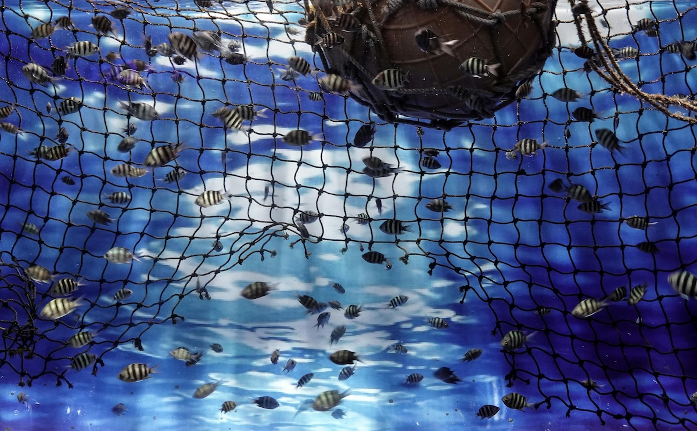

Rüyada Balık Ağı Görmek Ne Anlama Gelir?
Rüyalar, bilinçaltımızın yansımaları olarak farklı sembollerle bize mesajlar verir. Rüyada balık ağı görmek de bu sembollerden biridir ve çeşitli anlamlar taşır. Balık ağı, genellikle kısmet, bereket, fırsatlar ve bazen de engellerle ilişkilendirilir. Rüyanın detayları, ağın durumu ve içeriği yorum açısından büyük önem taşır.
Rüyada Boş Balık Ağı Görmek
Eğer rüyanızda boş bir balık ağı gördüyseniz, bu durum bazen kaçırılmış fırsatları veya beklenen kazançların elde edilememesini simgeleyebilir. Planlarınızın istediğiniz gibi gitmemesi ya da emeklerinizin boşa çıkması gibi anlamlar içerebilir. Ancak, bu durum umutsuzluğa kapılmak yerine daha fazla çaba göstermeniz gerektiğine dair bir uyarı niteliğinde de olabilir.
Rüyada Dolu Balık Ağı Görmek
Rüyanızda içi balıkla dolu bir ağ görmek, bolluk ve bereketin habercisidir. Maddi anlamda kazanç elde edeceğiniz, iş hayatınızda başarılı olacağınız ya da büyük bir fırsat yakalayacağınız şeklinde yorumlanabilir. Aynı zamanda, rüya sahibinin sabrının ve emeğinin karşılığını alacağına işaret eder.
Rüyada Yırtık Balık Ağı Görmek
Yırtık bir balık ağı görmek, bazı zorluklar ve kayıplar yaşayabileceğinizin işaretidir. Elinizdeki fırsatları doğru değerlendirmezseniz ya da dikkatsiz davranırsanız, önemli kazançları kaçırabilirsiniz. Ayrıca, güvendiğiniz insanlardan zarar görme ihtimaline de işaret edebilir.
Rüyada Balık Ağıyla Balık Tutmak
Eğer rüyanızda balık ağıyla balık tuttuğunuzu görüyorsanız, bu, başarılı girişimlerin ve fırsatların yakalanacağını gösterir. Özellikle iş hayatında önemli adımlar atabileceğinize, maddi ve manevi anlamda kazanç sağlayacağınıza delalet eder. Eğer tuttuğunuz balıklar büyük ve sağlıklıysa, büyük bir kazanç elde edeceğinize işaret eder.
Rüyada Suda Balık Ağı Görmek
Rüyanızda suyun içinde bir balık ağı görmek, hayatınızdaki fırsatları gösterir. Bu fırsatları değerlendirmek için doğru zamanı beklemeniz gerektiği şeklinde yorumlanır. Su berraksa, işlerin yolunda gideceğini; bulanıksa, bazı engellerle karşılaşabileceğinizi gösterebilir.
Genel Yorum
Rüyada balık ağı görmek, genel olarak fırsatları ve kazancı simgelese de rüyanın detayları büyük önem taşır. Boş bir ağ, kaçırılmış fırsatları; dolu bir ağ, bereketi; yırtık bir ağ, kayıpları işaret edebilir. Rüyanızın mesajını doğru anlamak için çevrenizdeki gelişmeleri iyi gözlemlemek ve fırsatları en iyi şekilde değerlendirmek önemlidir.
Siz de rüyanızda balık ağı gördüyseniz, detayları hatırlayarak kişisel yorumunuzu yapabilirsiniz. Unutmayın, rüyalar sadece birer işaret olup, hayatımızın yönünü biz belirleriz!